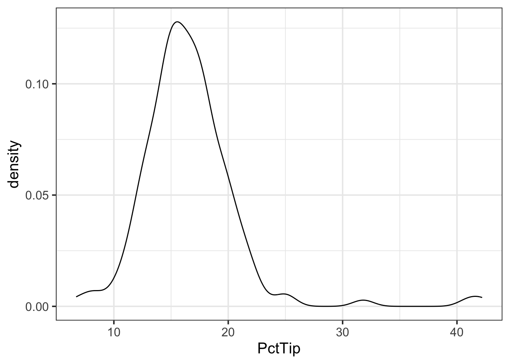
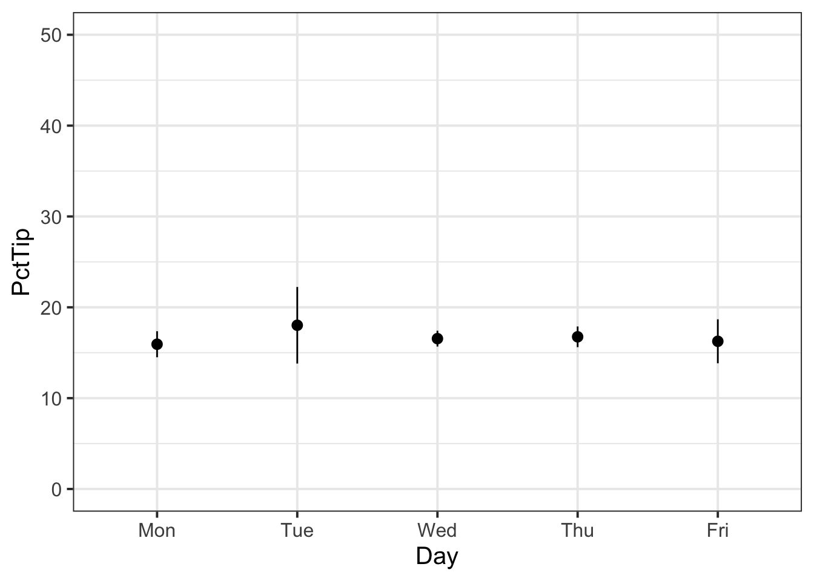
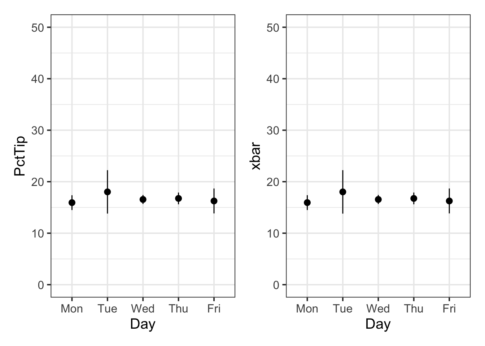

Sampling
Semester 1 - Week 11
1 Formative Report B
Formative report B - Structure
The submitted report should be a PDF file of 6 pages at most.
-
It should include 3 sections:
- Introduction - Write here an introduction to the data, the variables, and anything worth of notice in the data.
- Analysis - Present here your tables, plots, and results. Make sure to interpret what you present.
- Discussion - Write up your take home messages here…
-
After those, you can add after two Appendices which will not count towards the 6-page limit:
- Appendix A - where you can put any additional tables or plot that you may not be able to fit in the page limit. However, please ensure these plots are related to the interpretation provided.
- Appendix B - where you will collate all the R code in a chunk with the settings
echo=TRUE, results='hide', fig.show='hide'.
Excluding the Appendix, the report should not include any reference to R code or functions, but be written for a generic reader who is only assumed to have a basic statistical understanding without any R knowledge.
Formative report B - Submission Instructions
Your group must submit one PDF file for formative report B by 12 noon on Friday 2nd December 2022.
-
To submit go to the course Learn page, click “Assessment” from the left-hand side menu, then click “Report submission”, and then “Submit Formative Report B here (PDF file only)”.
- Only one person per group is required to submit on behalf of the entire group. However, to ensure that everyone in the group can see the feedback, please double check that you self-registered in the group on Learn (see group name on the desk).
As mentioned on the Course Information page, there will be no extensions allowed for group-based reports.
You will receive formative feedback on your submission during the labs of week 12. Please attend your lab next week!
Formative report B - Data
Hollywood Movies. At the link https://uoepsy.github.io/data/hollywood_movies_subset.csv you will find data on Hollywood movies released between 2012 and 2018 from the top 5 lead studios and top 10 genres. The following variables were recorded:
-
Movie: Title of the movie -
LeadStudio: Primary U.S. distributor of the movie -
RottenTomatoes: Rotten Tomatoes rating (critics) -
AudienceScore: Audience rating (via Rotten Tomatoes) -
Genre: One of Action Adventure, Black Comedy, Comedy, Concert, Documentary, Drama, Horror, Musical, Romantic Comedy, Thriller, or Western -
TheatersOpenWeek: Number of screens for opening weekend -
OpeningWeekend: Opening weekend gross (in millions) -
BOAvgOpenWeekend: Average box office income per theater, opening weekend -
Budget: Production budget (in millions) -
DomesticGross: Gross income for domestic (U.S.) viewers (in millions) -
WorldGross: Gross income for all viewers (in millions) -
ForeignGross: Gross income for foreign viewers (in millions) -
Profitability: WorldGross as a percentage of Budget -
OpenProfit: Percentage of budget recovered on opening weekend -
Year: Year the movie was released -
IQ1-IQ50: IQ score of each of 50 audience raters (every movie had different raters) -
Snacks: How many of the 50 audience raters brought snacks -
PrivateTransport: How many of the 50 audience raters reached the cinema via private transportation
2 Tasks
For formative report B, you will be asked to perform the following tasks, each related to a week of teaching in this course.
This week you will only focus on task B5.
B1) Create and summarise categorical variables, before calculating probabilities.
B2) Investigate if events are independent, and compute probabilities.
B3) Computing and plotting probabilities with a binomial distribution. B4) Computing and plotting probabilities with a normal distribution.
This week’s task
B5) Plot standard error of the mean, and finish the report write-up (i.e., knit to PDF, and submit the PDF for formative feedback).
3 B5 sub-tasks
Tip
To see the hints, hover your cursor on the superscript numbers.
In this section you will find some guided sub-steps you may want to consider to complete task B5.
Context
An investor has gotten in touch and has asked you to consult on what Lead Studio they should invest in, based on audience scores of the top three movie genres. They want to be presented with two options:
A. High risk option: Highest average audience score, irrespectively of the standard error
B. Low risk option: Small spread in audience scores, but with highest average audience score possible among those
- Reopen last week’s Rmd file, and continue building on last week’s work. Make sure you are still using the movies dataset filtered to only include the top 3 genres.1
- Visualise the distribution of the audience scores and note if there are any unusual observations (e.g., outliers).2
- To advise the investor on the average audience score, calculate the sample mean and standard error.3
\[ SE_{\bar x} = \frac{s}{\sqrt{n}} \]
- Calculate the estimated means, along with a measure of their variability, across Lead Studios, and interpret your output4.
- Is the variation of means equal to or less than the variability of the sample data?5
- Visualise the average audience scores and SEs - how do these vary between the Lead Studios6?
Based on what you have reported above, what high and low risk options will you present to the investor? Justify your answer.
In the analysis section of your report, write up a summary of what you have reported above, using proper rounding to 2 decimal places and avoiding any reference to R code or functions.
Organise the Rmd file to have the following structure (click ‘Report B Structure’ below to expand)
Report B Structure
---
title: "Formative report B"
author: "Group ?.?"
date: "Write the date here"
output: bookdown::pdf_document2
toc: false
---```{r setup, include=FALSE}
knitr::opts_chunk$set(echo=FALSE, message=FALSE, warning=FALSE)
``````{r, include=FALSE}
# week 7 code below
library(tidyverse)
# week 8 code below
pltEye <- ggplot(starwars, aes(x = eye_color)) +
geom_bar()
# week 9 code below
# week 10 code below
# week 11 code below
```## Introduction
Write here an introduction to the data, the variables, and anything worth of notice in the data.
## Analysis
Present here your tables, plots, and results. In the code chunk below, you do
not need to put the chunk option `echo=FALSE` as you set this option globally
in the setup chunk.
```{r}
pltEye
```
If you didn't set it globally, you would need to put it in the chunk options:
```{r, echo=FALSE}
pltEye
```
More text...
## Discussion
Write up your take home messages here...## Appendix A - Additional tables and figures
Insert here any additional tables or figures that you could not fit in the
6-page limit.## Appendix B - R code
```{r, echo=TRUE, results='hide', fig.show='hide'}
# copy and paste here all your R code
# week 1 code below
library(tidyverse)
# week 2 code below
pltEye <- ggplot(starwars, aes(x = eye_color)) +
geom_bar()
# week 3 code below
# week 4 code below
```Knit the document to PDF
-
Submit the PDF file on Learn:
- Go to the Learn page of the course
- Click Assessments on the left-hand side menu
- Click Report submission
- Click Formative Report B
- Follow the instructions
Referencing figures
First, you need to pick a unique label for the code chunk that displays the figure, in this case short-label but you should use a more descriptive name.
```{r short-label, fig.cap = "Figure caption"}
pltEye <- ggplot(starwars, aes(x = eye_color)) +
geom_bar() +
theme(axis.text.x = element_text(angle = 45, hjust = 1))
pltEye
```To reference a figure, for example the one above, you would
write see Figure \@ref(fig:short-label).which, when you Knit to PDF, becomes:
To reference a figure, for example the one above, you would write see Figure 1.
Referencing tables
First, you need to pick a unique label for the code chunk that displays the table, in this case tbl-short-label but you should use a more descriptive name.
```{r tbl-short-label, echo=FALSE}
library(kableExtra)
tblEye <- starwars %>%
count(eye_color) %>%
kbl(booktabs = TRUE, caption = "Short table caption")
tblEye
```| eye_color | n |
|---|---|
| black | 10 |
| blue | 19 |
| blue-gray | 1 |
| brown | 21 |
| dark | 1 |
| gold | 1 |
| green, yellow | 1 |
| hazel | 3 |
| orange | 8 |
| pink | 1 |
| red | 5 |
| red, blue | 1 |
| unknown | 3 |
| white | 1 |
| yellow | 11 |
The table is referenced as, see Table \@ref(tab:tbl-short-label).Which, when you knit to PDF, is displayed as:
The table is referenced as, see Table 1.
For details on styling PDF tables, see this link.
Reducing figure size
You could place multiple panels into a single figure using the functions | and / from the patchwork package.
You could adjust the figure height and width by playing with a few options for the numbers fig.height = ? and fig.width = ?, for example 5 and 4, or 12 and 8, and so on. Please note this is typically found by trial and error. Keep in mind, however, that the figure labels should still be legible in the plot you show.
```{r, fig.height = 5, fig.width = 4}
# your code to display the figure here
```
Hiding R code or ouput
To not show the code of an R code chunk, and only show the output, write:
```{r, echo=FALSE}
# code goes here
```To show the code of an R code chunk, but hide the output, write:
```{r, results='hide'}
# code goes here
```To hide both text output and figures, use:
```{r, results='hide', fig.show='hide'}
# code goes here
```To hide both code and output of an R code chunk, write:
```{r, include=FALSE}
# code goes here
```This is the metadata block. It includes the:
- document title
- author name
- date (to leave empty, use an empty string
"") - the output type
The output type could be html_document, pdf_document, etc.
We use bookdown::pdf_document2 so that we can reference figures, which pdf_document doesn’t let you do.
The code bookdown::pdf_document2 simply means to use the pdf_document2 type from the bookdown package.
The code toc: false hides the table of contents.
This is the setup chunk and should always be included in your Rmd document. It sets the global options for all code chunks that will follow.
- If
echo=TRUE, the R code in chunks is displayed. If FALSE, not. - If
message=TRUE, information messages are displayed. If FALSE, not. - If
warning=TRUE, warning messages are printed. If FALSE, not.
If you want to change the setting in a specific code chunk, you can do so via:
```{r, echo=FALSE}
# A code chunk
```This code chunks contains your rough work from each week. Give names to plots and tables, so that you can reference those later on. The option include=FALSE hides both code and output.
To run each line of code while you are working, put your cursor on the line and press Control + Enter on Windows or Command + Enter on a macOS.
This contains your actual textual reporting, as well as tables and figures. To show in place a plot previously created, just include the plot name in a code chunk with the option echo = FALSE to hide the code but display the output.
This allows the marker to see the code you used to obtain your results. Please note that only the code should be visible in the appendix, no output.
The chunk options echo=TRUE, results='hide', fig.show='hide' ensure that the appendix code is visible (echo=TRUE), the output is hidden (results=‘hide’), and figures are hidden (fig.show=‘hide’).
The appendix does not count towards the 4-page limit.
4 Worked Example
The dataset available at https://uoepsy.github.io/data/RestaurantTips.csv was collected by the owner of a US bistro, and contains 157 observations on 7 variables.7
The bistro owners servers are concerned that some shifts are more profitable than others, and that their rota needs to be updated so that they all get the chance to maximise their tips. They have asked the owner to find out what days the highest percentage of tips are given, on average. They have also asked the owner to tell them the days on which variation in percentage tips is highest and lowest. We need to advise the bistro owner so that they can update their servers with the requested information.
| Variable Name | Description |
|---|---|
| Bill | Size of the bill (in dollars) |
| Tip | Size of the tip (in dollars) |
| Credit | Paid with a credit card? n or y |
| Guests | Number of people in the group |
| Day | Day of the week: m=Monday, t=Tuesday, w=Wednesday, th=Thursday, or f=Friday |
| Server | Code for specific waiter/waitress: A, B, or C |
| PctTip | Tip as a percentage of the bill |
library(tidyverse)
library(patchwork)
tips <- read_csv("https://uoepsy.github.io/data/RestaurantTips.csv")
head(tips)# A tibble: 6 × 7
Bill Tip Credit Guests Day Server PctTip
<dbl> <dbl> <chr> <dbl> <chr> <chr> <dbl>
1 23.7 10 n 2 f A 42.2
2 36.1 7 n 3 f B 19.4
3 32.0 5.01 y 2 f A 15.7
4 17.4 3.61 y 2 f B 20.8
5 15.4 3 n 2 f B 19.5
6 18.6 2.5 n 2 f A 13.4- First we want to prepare our data, and check for any unusual or impossible values (e.g., outliers). One useful way to do this would be to plot our data:
ggplot(tips, aes(x = PctTip)) +
geom_histogram()
We can see one outlier (on the far right of the plot), where the percentage tip appears to be more than 2 x the total bill(!), so lets inspect that outlier:
# A tibble: 1 × 7
Bill Tip Credit Guests Day Server PctTip
<dbl> <dbl> <chr> <dbl> <chr> <chr> <dbl>
1 49.6 NA y 4 th C 221We can see that the ‘Tip’ column has an NA value, so perhaps the ‘PctTip’ value of 221 was a data input error? If so, we want to remove the outlier:
- Since we are interested in looking at the percentage tips across weekdays, we may want to give our ‘Day’ variable better labels for levels:
- If we were asked to describe the shape of the distribution of the ‘PctTip’ variable, we could use either a histogram, a density plot, or a boxplot:
ggplot(tips, aes(x = PctTip)) +
geom_histogram(colour = 'white')
ggplot(tips, aes(x = PctTip)) +
geom_density()
ggplot(tips, aes(x = PctTip)) +
geom_boxplot()
The distribution of percentage tip is not exactly normal as it shows a slight skew to the right. This suggests that there were more individuals tipping well above the mean than below (i.e., more extremely high tips)
- Now that we have visualised our distribution, it would be useful to estimate the centre and spread of our data. In other words, calculate the sample mean and standard error of the mean.
Sample Statistics
Mean: the sample mean \(\bar{x}\) (x-bar) is the mean computed from the sample data (sample statistic). As this is an estimate of the population mean \(\mu\), it can also be denoted \(\hat{\mu}\) (mu-hat).
Standard error: The standard error of the mean, denoted \(SE\) or \(SE_{\bar x}\), is the standard deviation of its sampling distribution. The standard error is \(SE_{\bar x} = \sigma / \sqrt{n}\) but, as we do not know the population standard deviation \(\sigma\), we must estimate it with the sample standard deviation \(s\), leading to this formula for the standard error of the mean:
\[ SE_{\bar x} = \frac{s}{\sqrt{n}} \]
We can calculate our sample statistics as follows:
n_tips <- nrow(tips)
n_tips[1] 156xbar_tips <- mean(tips$PctTip)
xbar_tips[1] 16.59103[1] 0.3511618- We can then check how our sample statistics vary across each day of the week:
| Day | n | xbar | se |
|---|---|---|---|
| Mon | 20 | 15.94 | 0.72 |
| Tue | 13 | 18.02 | 2.11 |
| Wed | 62 | 16.55 | 0.44 |
| Thu | 35 | 16.75 | 0.57 |
| Fri | 26 | 16.26 | 1.21 |
-
If we were asked to interpret the sample statistics for each day, we could summarise as below:
- Interpreting \(\bar{x}\) / \(\hat{\mu}\)
- Of the days of the week, Tuesday was when the highest average percentage tips were received, and Monday the lowest.
- Apart from Tuesday (when the average percentage tip is likely to be above average), the other days of the week are very close to 15%.
- Interpreting \(SE\)
- The percentage of tips varied most on Tuesdays on Fridays, where tips would either be very generous or measly.
- Interpreting \(\bar{x}\) / \(\hat{\mu}\)
Next we want to visualise the association between days and percentage tip. We can either do this using
ggplot()or do so manually based on our tibble we created above (tbl_tips):
plt1 <- ggplot(tips, aes(x = Day, y = PctTip)) +
stat_summary(fun.data = function(x) mean_se(x, 2)) +
ylim(0, 50)
plt1
plt2 <- ggplot(tbl_tips) +
geom_pointrange(aes(x = Day, y = xbar,
ymin = xbar - 2 * se,
ymax = xbar + 2 * se)) +
ylim(0,50)
plt2
We can then arrange our two plots side by side to see if they match, which they do:
plt1 | plt2
- We know that the variability of the mean Percentage Tip across each day of the week should be equal to or less than the variability of the sample data. We can check that this is the case:
tips %>%
group_by(Day) %>%
summarise(n = n(),
xbar = mean(PctTip),
SD = sd(PctTip),
SE = SD / sqrt(n)) %>%
mutate(IsSESmaller = SE < SD) # A tibble: 5 × 6
Day n xbar SD SE IsSESmaller
<fct> <int> <dbl> <dbl> <dbl> <lgl>
1 Mon 20 15.9 3.20 0.716 TRUE
2 Tue 13 18.0 7.60 2.11 TRUE
3 Wed 62 16.6 3.43 0.436 TRUE
4 Thu 35 16.8 3.37 0.569 TRUE
5 Fri 26 16.3 6.17 1.21 TRUE For each entry in the ‘IsSESmaller’ column, we can see that it is true!
Example writeup
The bistro servers are correct - percentage tips do vary by day (see Table 1). These differences are displayed in Figure 1.
As displayed above, Tuesdays are when servers received the highest average percentage tips, and Mondays were the lowest. In terms of variability, all days of the week (aside from Tuesday when the percentage of tip is more likely to be above average), are very close to the average tipping rate (15%).
5 Student Glossary
To conclude the lab, add the new functions to the glossary of R functions.
| Function | Use and package |
|---|---|
filter |
? |
factor |
? |
group_by() |
? |
geom_histogram() |
? |
geom_boxplot() |
? |
geom_density() |
? |
geom_line() |
? |
after_stat() |
? |
References
Lock, Robin H, Patti Frazer Lock, Kari Lock Morgan, Eric F Lock, and Dennis F Lock. 2020. Statistics: Unlocking the Power of Data. John Wiley & Sons.
Footnotes
Hint: Ask last week’s driver for the Rmd file, they should share it with the group via email or Teams. To download the file from the server, go to the RStudio Files pane, tick the box next to the Rmd file, and select More > Export.↩︎
Hint: It would be a good idea to visualise your data to try and identify any outliers in the data. You may want to consider one of these functions:
geom_density(),geom_histogram(),geom_boxplot().↩︎-
Hint: You can calculate the mean and standard error as:
Mean: the sample mean \(\bar{x}\) (x-bar) is the mean computed from the sample data (sample statistic). As this is an estimate of the population mean \(\mu\), it can also be denoted \(\hat{\mu}\) (mu-hat).
Standard error: The standard error of the mean, denoted \(SE\) or \(SE_{\bar x}\), is the standard deviation of its sampling distribution. The standard error is \(SE_{\bar x} = \sigma / \sqrt{n}\) but, as we do not know the population standard deviation \(\sigma\), we must estimate it with the sample standard deviation \(s\), leading to this formula for the standard error of the mean:
Hint: In order to have sample statistics for each Lead Studio, you will need to use the
group_by()function before summarising the data with the sample mean and the standard error.↩︎Hint: Compare the standard error to the standard deviation. Recall, the standard deviation tells you how much each data point varies around the mean, while the standard error of the mean tells you how much the means (from different random samples) vary with respect to their mean (the unknown population mean).↩︎
-
Hint: Some of these functions may be useful:
stat_summary(),geom_pointrange().You can also use the
coord_flip()function to ‘flip’ your axes - it might make it easier to read your plot.↩︎